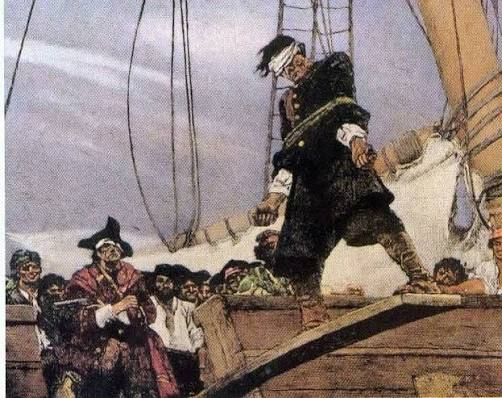
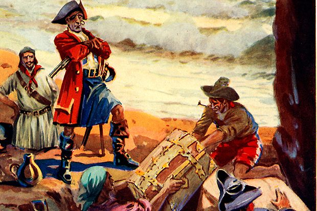
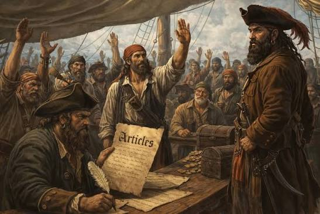

Myth #1: Pirates made their victims "walk the plank"

There is almost no historical evidence that pirates routinely forced captives to walk the plank. While pirates were certainly capable of extreme violence and torture to extract information or punish defiance, this specific trope is largely a product of 19th-century fiction, popularized by authors like J.M. Barrie in Peter Pan. Pirates generally preferred to dispose of unwanted prisoners by marooning them on deserted islands or simply throwing them overboard during a fight.
Myth #2: Pirates buried their treasure on islands

The image of a pirate hiding a chest of gold under an "X" on a map is mostly a myth. Piracy was a high-risk business; pirates usually spent their loot quickly on supplies, gambling, alcohol, and shore leave. Furthermore, because pirate crews were often large and prone to infighting, trusting a single person to bury treasure and keep the secret was rarely feasible. Only one historical pirate, William Kidd, is known to have buried treasure—and he did it in an attempt to use it as a bargaining chip to avoid execution.
Myth #3: Pirate crews were purely lawless mobs

Pirate ships were surprisingly democratic and highly regulated. Most pirate crews operated under a set of rules known as "Articles of Agreement." Before a ship set sail, the crew would sign these articles, which laid out:
Compensation: How loot would be split (captains usually only got two shares, while the crew got one).
Discipline: Punishments for fighting on board, shirking duties, or gambling. Welfare: Specific compensation for those injured in battle (an early form of health insurance).
Governance: Captains were elected by the crew and could be voted out of power for cowardice or incompetence.
Myth #4: Pirates flew the "Jolly Roger" all the time

Pirates rarely sailed under the black-and-white skull-and-crossbones flag. Flying the "Jolly Roger" was a strategic psychological tactic—it was used to intimidate a target ship into surrendering without a fight. Most pirates preferred to fly false colors (such as the British or Spanish flags) to get close to their prey without raising suspicion before revealing their true identity.
Myth #5: Pirates were all men

While women were rare on pirate ships due to superstition and the brutal living conditions, they were certainly not absent. History remembers notable figures like Anne Bonny and Mary Read, who fought alongside men in the Caribbean during the early 18th century. They were known for being just as fierce, if not more so, than their male counterparts.